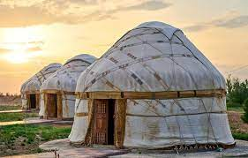

Jurty w naszym ośrodku
Co to jest jurta?
Jurta – namiot pokryty skórami (zwykle jelenimi) lub wojłokiem,
który używany jest przez ludy tureckie i mongolskie.
Termin pochodzi z języków tureckich,
więc dotyczy jedynie tych,
które można zobaczyć od Morza Kaspijskiego po Ałtaj.
Co zastaniesz w środku?
Łóżka, stół, krzesła, kuchenka lub piec, wyposażenie kuchenne.
Co będzie potrzebne
Wszystko co niezbędne znajduje się na miejscu.
